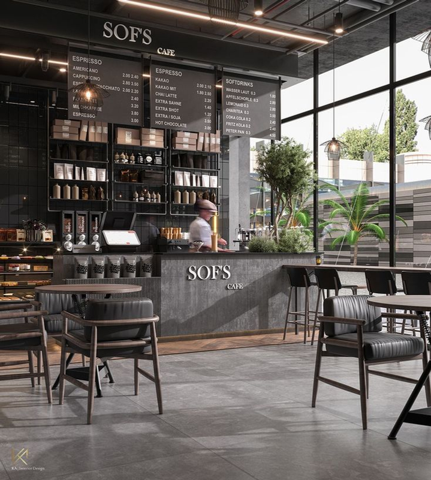
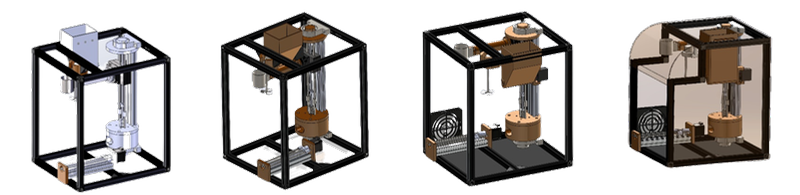
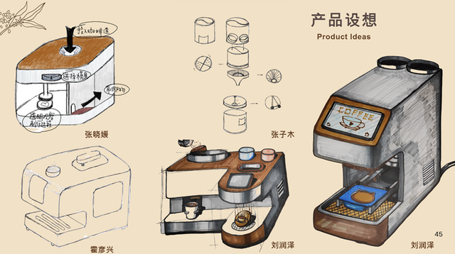
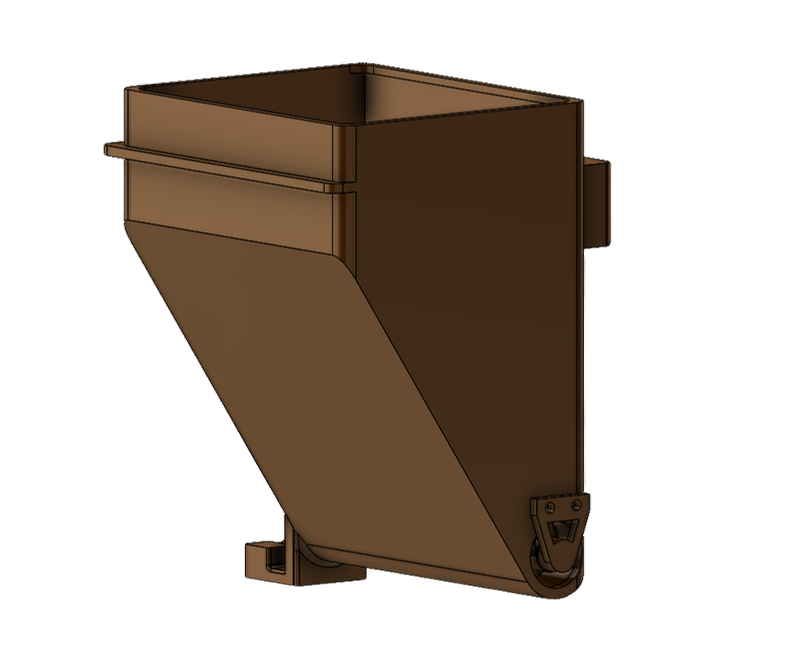
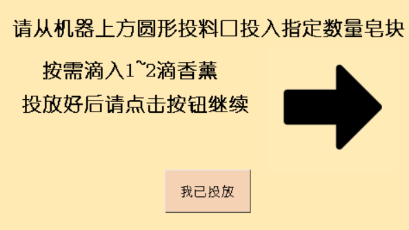
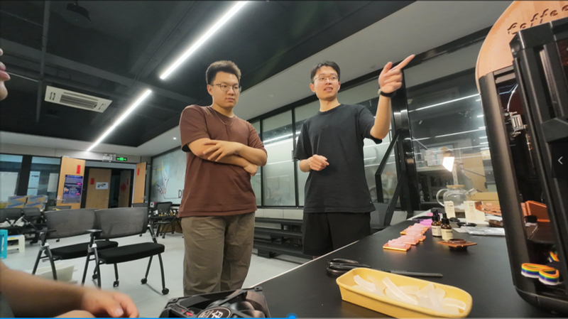

Coffee Crystal
A semi-automated countertop machine that turns a café’s spent coffee grounds into soap, making the recycling process visible to customers while reducing staff workload.

01Start from the café
Field visits, social-media research, and interviews pointed to three practical needs: the machine should be convenient, visually attractive, and compatible with a small café counter. The product concept turns grounds into a sellable or giftable item instead of adding another manual disposal task.
This was a team design project. The website presents the integrated system rather than assigning every subsystem to one person.

02Organize the machine
The internal layout evolved repeatedly as the frame, heating arm, material bins, mold, wiring, and customer interaction competed for space. The final architecture used aluminum profiles for the structural frame and acrylic panels for protection and visibility.


03Coordinate material, heat and motion
- MeterA servo-driven screw feeder controls the coffee-ground volume.
- Heat & mixA heated pot and stirrer melt the soap base and mix in grounds.
- MoveA three-axis mechanism transfers and pours the mixture.
- Cool & deliverA removable mold and fan support handoff to the customer.

The embedded controller used FreeRTOS to separate initialization, input reading, and the production sequence. Motor pulses were moved to interrupt-based timing so motion and heating could run together. Below 50°C the heater prioritizes warm-up; from 50–65°C it switches to PID control to reduce overshoot.
The heating arm was shortened from 150 mm to 120 mm to improve stability under periodic stirring loads.
04Guide a first-time user

The tilted touchscreen keeps instructions near the material inlets and gives each action a visible response. Testing with more than 20 new users led to clearer directional prompts, more explicit wording, and stronger visual distinction between the mold slot and feeding ports.
The project reports usability changes from the sessions, but not a controlled comparison or task-completion metric.
05What remains
- Reduce cooling time and improve heat removal.
- Refine the heating and stirring sequence.
- Sense remaining coffee grounds and soap base.
- Support different mold sizes and ground ratios.
